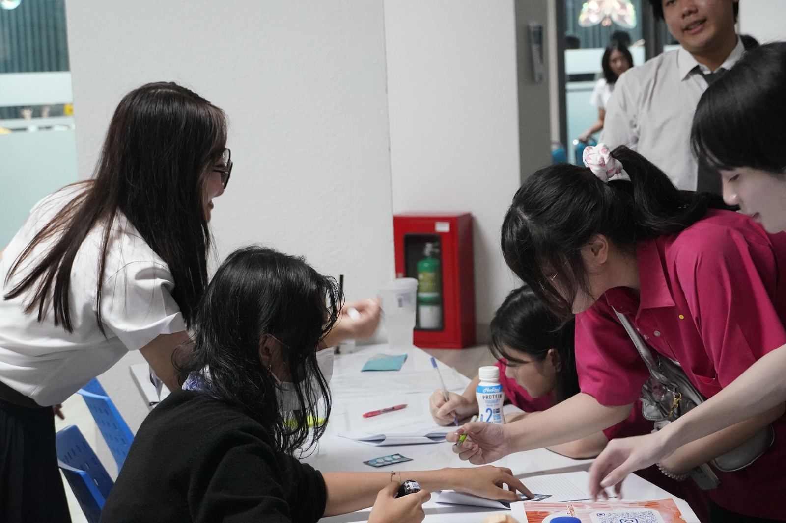

Academics & Research
Academic Calendar
ปฏิทินการศึกษา
กำหนดการเปิด-ปิดภาคเรียน การลงทะเบียน และการสอบของแต่ละระดับการศึกษา
Documents
Published Calendars
ปฏิทินที่เผยแพร่
ปฏิทินการศึกษาเป็นเอกสารกลางของมหาวิทยาลัย — ลิงก์เปิดไฟล์ PDF ฉบับล่าสุดจากเว็บไซต์ต้นทางในแท็บใหม่
ปริญญาตรี
2569
Undergraduate Calendar
ปฏิทินการศึกษา ระดับปริญญาตรี
วันเปิด-ปิดภาคเรียน ช่วงลงทะเบียน วันสอบ และกำหนดการทางวิชาการ
เปิดไฟล์ PDFบัณฑิตวิทยาลัย
2569
Graduate Calendar
ปฏิทินการศึกษา ระดับบัณฑิตศึกษา
กำหนดการสำคัญของบัณฑิตวิทยาลัยสำหรับนิสิตปริญญาโทและปริญญาเอก
เปิดไฟล์ PDFEnglish Version
2025
SWU Academic Calendar
ฉบับภาษาอังกฤษ (ปริญญาตรี)
เผยแพร่โดยส่วนวิเทศสัมพันธ์ฯ สำหรับนิสิตนานาชาติและหลักสูตร GBM
เปิดไฟล์ PDFไฟล์ทั้งหมดอยู่บนเว็บไซต์ของมหาวิทยาลัย หากลิงก์ใดเปิดไม่ได้ อาจมีการเผยแพร่ฉบับใหม่ — แจ้งงานบริการการศึกษาเพื่ออัปเดตลิงก์
Academic Services
สอบถามเรื่องลงทะเบียนและตารางเรียน
งานบริการการศึกษา · โทรภายใน 11756